FAVORITES
Characters
Eternal waifu and husbando hall of fame. Mouseover portraits to see name and series. Portraits marked with a pink heart are characters I self-ship with in some capacity.
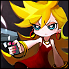 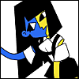 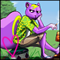 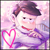 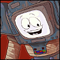 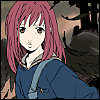 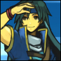 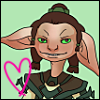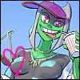 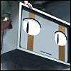 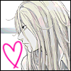 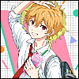
Pairings
Characters that belong together. Not a huge shipper, so if I put a pairing here, I feel very strongly about it.
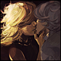 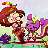 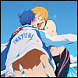 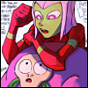 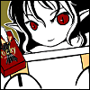
Top Anime
Kaiba  Tatami Galaxy Aku no Hana Ping Pong: The Animation FLCL Panty and Stocking with Garterbelt Osomatsu-san ERASED Mawaru Penguindrum The Big O Serial Experiments Lain Ergo Proxy Revolutionary Girl Utena Mob Psycho 100 Kids on the Slope Cardcaptor Sakura Odd Taxi Tsuritama Free! Iwatobi Swim Club / Eternal Summer
Tatami Galaxy Aku no Hana Ping Pong: The Animation FLCL Panty and Stocking with Garterbelt Osomatsu-san ERASED Mawaru Penguindrum The Big O Serial Experiments Lain Ergo Proxy Revolutionary Girl Utena Mob Psycho 100 Kids on the Slope Cardcaptor Sakura Odd Taxi Tsuritama Free! Iwatobi Swim Club / Eternal Summer
Top Movies
Mind Game The Night is Short, Walk on Girl Children of the Sea Dead Leaves Lu Over the Wall Jin-Rou Ghost in the Shell Paprika Tekkon Kinkreet Perfect Blue End of Evangelion Inu-Ou
Top Videogames
Cave Story Mother Series UNDERTALE / DELTARUNE Fallout: New Vegas Golden Sun Series Yume Nikki Legend of Zelda Series Portal Series Baten Kaitos Series Hatoful Boyfriend Omori Stardew Valley Guild Wars 2 Diablo 1/2 Animal Crossing: Population Growing and Wild World
Top Manga
Dungeon Meshi Dorohedoro Berserk Prison School Oyasumi Punpun Girl's Last Tour Death Note Inside Mari